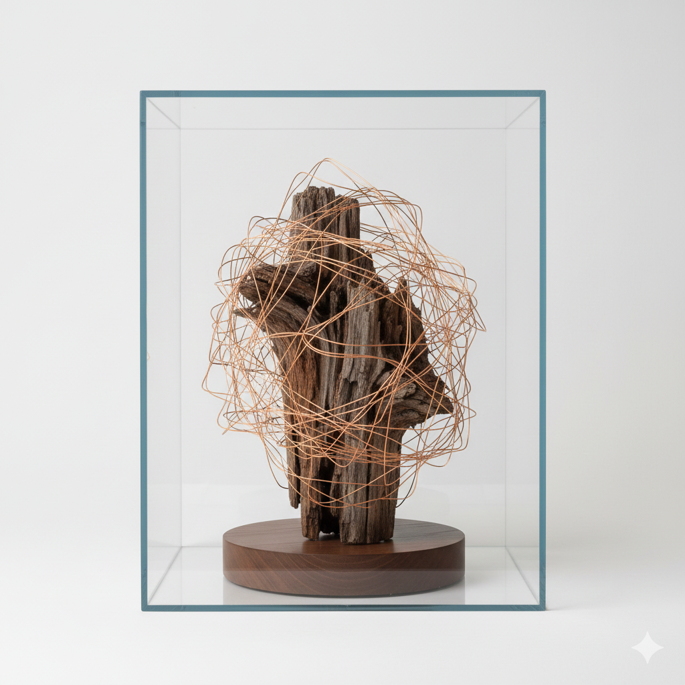
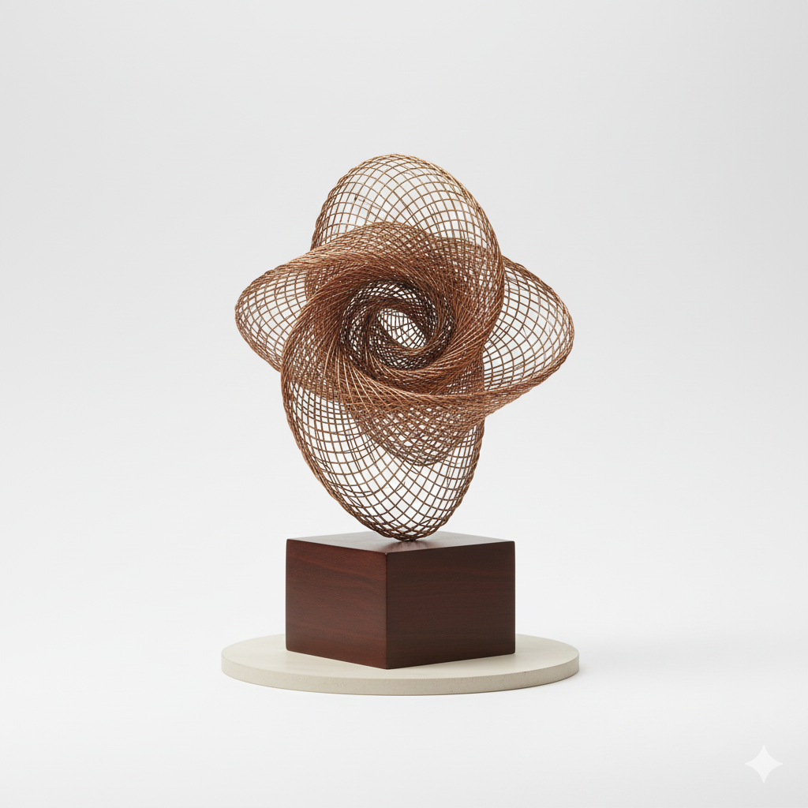

SELECTED WORKS
Eroded Monument
2024 | Salvaged Steel, 10ft x 4ft
**Lengthy Description 1:** This piece marks the beginning of the "Ephemeral Rust" series, exploring the beauty found in decay. The salvaged steel, sourced from a decommissioned shipyard, was intentionally treated with an acidic solution to accelerate the corrosion process. The resulting deep, mottled reds and oranges are not painted, but are the natural result of time and chemical interaction, challenging the viewer to consider materials beyond their original functional life.
The monumental scale is intended to contrast with the inherent fragility of the material structure, suggesting that even the strongest societal foundations are subject to environmental pressures and entropy. The installation demands attention through both its size and its vivid texture, inviting a tactile experience of visual history.

Quiet Decay
2023 | Mixed Media Installation
**Lengthy Description 2:** "Quiet Decay" shifts the focus from industrial scale to intimate texture. This installation incorporates fine copper wiring woven around decayed wooden forms, housed within a glass casing. The wood was left outdoors for six months to allow natural fungal and insect activity to contribute to its structure.
The copper acts as a ghostly embrace, highlighting the negative space left by erosion. The piece reflects on memory and absence, suggesting that what is lost leaves behind an imprint as compelling as what remains. The careful placement of the casing forces contemplation, transforming a process of biological decomposition into a preserved moment of artistic reflection.

Woven Wire
2022 | Bronze and Copper Mesh
**Lengthy Description 3:** This smaller, more kinetic sculpture uses tightly woven bronze and copper mesh to create an optical illusion of solidity. The piece changes character drastically depending on the light source and the viewer's perspective, appearing dense and heavy from one angle, and translucent from another.
"Woven Wire" is a study in materiality and light, drawing inspiration from ancient armor and organic cellular structures. The technique required meticulous hand-weaving over three months, a meditative process that itself mirrors the slow, deliberate work of nature. It serves as a reminder that the strongest forms often contain the most complex internal structures.